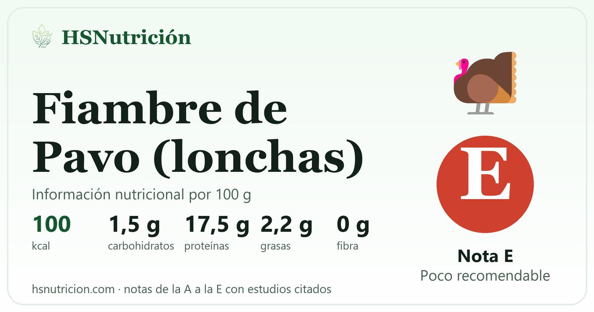

Fiambre de Pavo (lonchas)
Cárnicos¿Cuántas calorías y proteínas tiene Fiambre de Pavo (lonchas)? Por 100 g aporta 100 kcal y 17,5 g de proteína, con 1,5 g de carbohidratos, 2,2 g de grasas y 0 g de fibra. Calificación E en HSNutrición. Descubre el motivo y el mejor sustituto.
El fiambre de pavo parece una opción ligera (unas 100 kcal y 17 g de proteína por 100 g), pero es carne procesada: lleva sal y aditivos y casi 1.000 mg de sodio por 100 g. La IARC (OMS) clasifica la carne procesada como carcinógena para las personas (grupo 1): hay evidencia suficiente de que causa cáncer colorrectal [1]. En los metaanálisis, un mayor consumo se asocia con un 18 % más de riesgo de cáncer colorrectal [2] y, por cada ración diaria, con un 15 % más de mortalidad total y cardiovascular [3]. El riesgo aumenta con la cantidad y no se conoce un nivel de consumo sin riesgo. Por eso lo calificamos E aunque sea de pavo: lo recomendable es no incluirlo en la alimentación habitual.
Revisado el 29 de octubre de 2026 · Calificación según nuestra metodología · Información educativa, no un consejo médico.
Guía: ultraprocesados, qué riesgos tienen y cómo reducirlos →
Información nutricional (por 100 g)
De las grasas, 0,6 g son saturadas · de los carbohidratos, 1 g son azúcares · sodio: 950 mg
Ración orientativa de Fiambre de Pavo (lonchas)
Una ración orientativa de Fiambre de Pavo (lonchas) es de 40 g (3-4 lonchas): aporta 40 kcal, 7 g de proteína, 0,6 g de carbohidratos y 0,9 g de grasa. Es un tamaño orientativo: ajústalo a tu caso.

Preguntas frecuentes sobre Fiambre de Pavo (lonchas)
¿Cuántas proteínas tiene Fiambre de Pavo (lonchas)?
Fiambre de Pavo (lonchas) tiene 17,5 g de proteína por 100 g. Está por debajo de la media de los alimentos de Cárnicos de nuestra guía (24 g por 100 g).
¿Cuántas calorías tiene Fiambre de Pavo (lonchas)?
Fiambre de Pavo (lonchas) tiene 100 kcal por 100 g, alrededor del 5 % de una dieta de 2.000 kcal. Está por debajo de la media de Cárnicos en la guía (236 kcal por 100 g).
¿Cuántos carbohidratos, grasas y fibra tiene Fiambre de Pavo (lonchas)?
Por 100 g, Fiambre de Pavo (lonchas) aporta 1,5 g de carbohidratos (de ellos, 1 g son azúcares), 2,2 g de grasas (0,6 g saturadas), 0 g de fibra y 950 mg de sodio.
¿Es saludable Fiambre de Pavo (lonchas)?
En HSNutrición, Fiambre de Pavo (lonchas) tiene una calificación E (poco recomendable). El fiambre de pavo parece una opción ligera (unas 100 kcal y 17 g de proteína por 100 g), pero es carne procesada: lleva sal y aditivos y casi 1.000 mg de sodio por 100 g.
¿Qué puedo comer en lugar de Fiambre de Pavo (lonchas)?
Las alternativas que proponemos son: Pavo. Pavo fresco cocinado en casa: misma proteína, sin aditivos y con mucho menos sodio.
¿Cuántas calorías tiene una ración de Fiambre de Pavo (lonchas)?
Una ración orientativa de Fiambre de Pavo (lonchas) es de 40 g (3-4 lonchas): aporta 40 kcal, 7 g de proteína, 0,6 g de carbohidratos y 0,9 g de grasa. Es un tamaño orientativo: la ración real depende de cada persona.
¿Puedo tomar Fiambre de Pavo (lonchas) si estoy a dieta?
Es mejor dejarlo para ocasiones puntuales: tiene calificación E (poco recomendable) y una ración (40 g) aporta 40 kcal. Ningún alimento por sí solo hace adelgazar ni engordar: cuenta el conjunto de lo que comes y su balance de calorías. Si sigues una dieta pautada, consúltala con tu dietista-nutricionista.